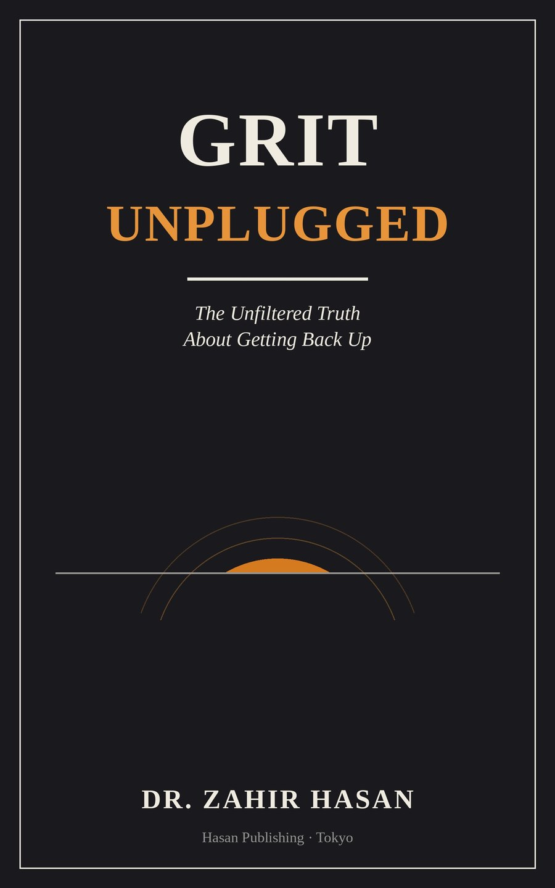

GRIT Unplugged
The Unfiltered Truth About Getting Back Up

Every setback comes with a story attached about what it means. Most of those stories are wrong.
Dr. Zahir Hasan was denied a graduate degree he had already earned — no clear explanation, no real path to appeal, just a closed door. It could have been the end of the story. Instead, it became the starting point for a career that eventually included a Master of Laws, a doctorate in education, and a life spent teaching university students how to face their own versions of the same fall.
GRIT Unplugged: The Unfiltered Truth About Getting Back Up is not a book about turning your worst moment into a hidden gift, and it does not promise that resilience will feel inspiring while it's happening. Drawing on decades of resilience research — Bandura, Bonanno, Seligman, and others — alongside his own uneven, sometimes unglamorous path back up, Hasan makes the case that getting back up is not a personality trait. It is a skill, built through ordinary practice, available to anyone willing to start again.
Written in a warm, story-driven voice rather than a textbook one, each chapter pairs real research with a real moment from the author's life — moving across four countries, a denied degree, and a slow rebuild — to leave readers with something more useful than motivation: a practical, honest way to get back up, again and again, for as long as it takes.
For anyone who has been knocked down and suspects the usual comeback story is missing something.
Ebook and paperback · Maple & Pine Press
- Author
- Dr. Zahir Hasan
- Publisher
- Maple & Pine Press, Tokyo
- List
- Education & Practical Guides